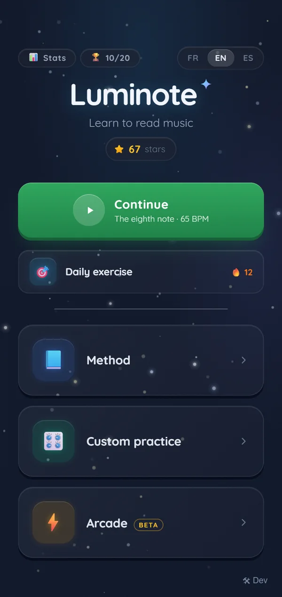
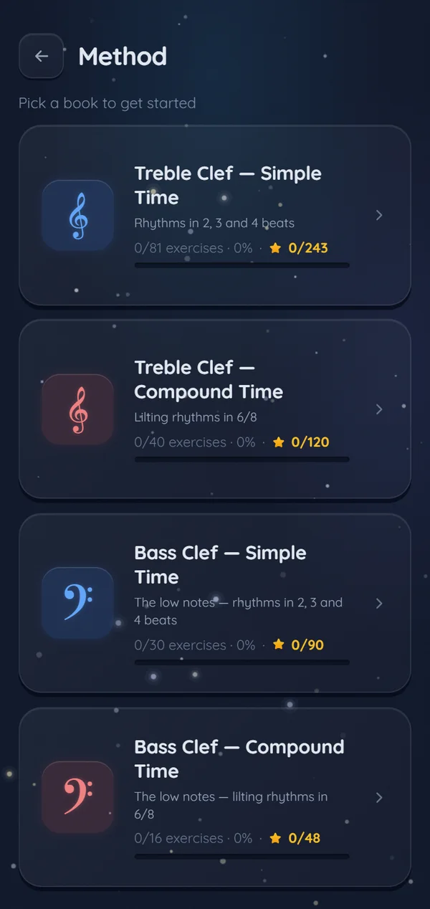
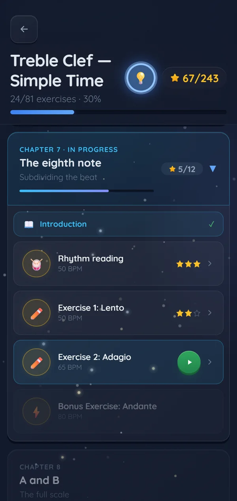
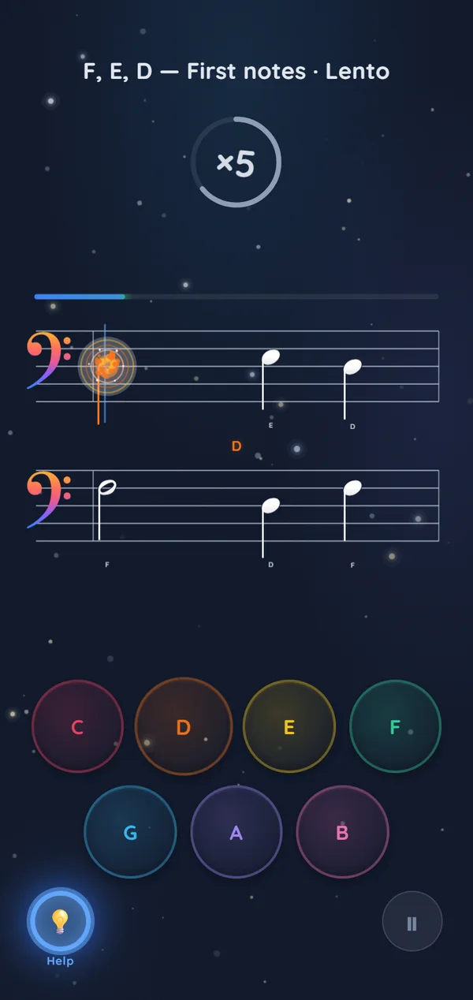
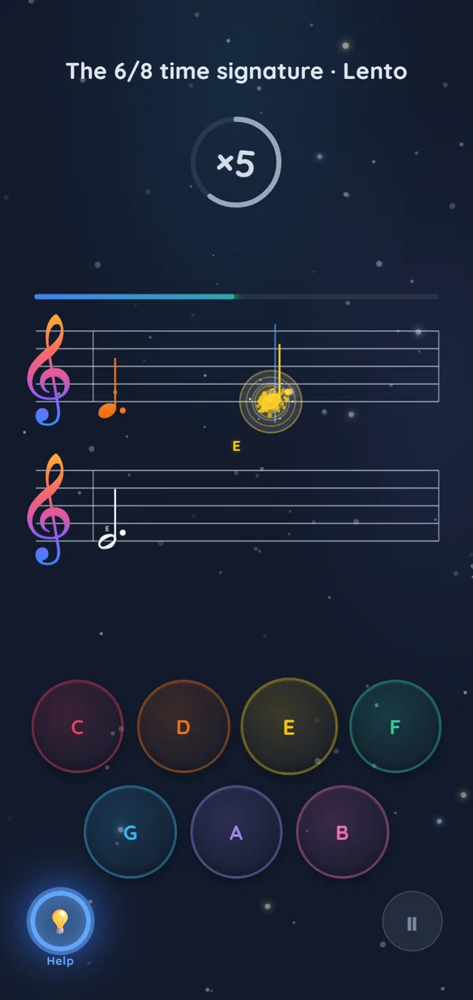
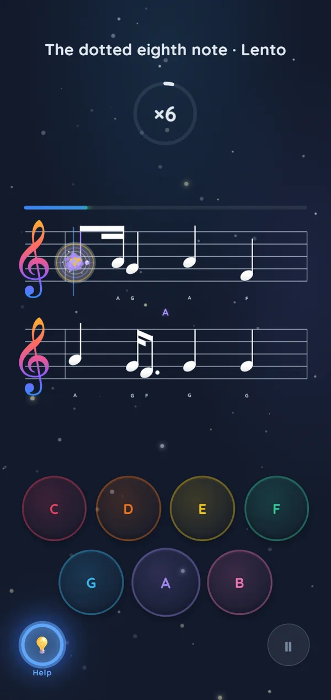

Les notes The notes Las notas
Chaque note sur la portée, en clé de sol comme en clé de fa. Every note on the staff, in treble and bass clef. Cada nota del pentagrama, en clave de sol y de fa.
Apprendre · Jouer · Progresser Learn · Play · Progress Aprender · Jugar · Progresar
Pensée comme un jeu vidéo, construite comme une méthode de solfège. Luminote apprend à lire une partition, note après note — sans compte, sans pub, entièrement hors ligne.
Designed like a video game, built like a music method. Luminote teaches you to read sheet music, one note at a time — no account, no ads, fully offline.
Pensada como un videojuego, construida como un método de solfeo. Luminote enseña a leer una partitura, nota a nota — sin cuenta, sin anuncios, totalmente sin conexión.

Démo jouable directement dans le navigateur, avec le son. Playable right in your browser, with sound. Jugable directamente en el navegador, con sonido.
La méthode The method El método
Chaque note sur la portée, en clé de sol comme en clé de fa. Every note on the staff, in treble and bass clef. Cada nota del pentagrama, en clave de sol y de fa.
Le rythme en mesure, de la ronde à la double-croche. Rhythm in time, from whole notes to sixteenths. El ritmo a compás, de la redonda a la semicorchea.
Des chapitres à débloquer, jusqu'aux vraies partitions. Chapters to unlock, all the way to real pieces. Capítulos por desbloquear, hasta partituras reales.
L'app The app La app
Chaque exercice rapporte jusqu'à trois étoiles selon la précision. Les étoiles débloquent les chapitres suivants, et le mode aide affiche le nom des notes pour débuter. Each exercise earns up to three stars based on accuracy. Stars unlock the next chapters, and help mode shows note names while you're starting out. Cada ejercicio otorga hasta tres estrellas según la precisión. Las estrellas desbloquean los capítulos siguientes, y el modo ayuda muestra el nombre de las notas al empezar.


Le programme The program El programa
La méthode part de trois notes et couvre les deux clés, les rythmes binaires et ternaires, de la ronde à la double-croche, jusqu'aux morceaux du répertoire. The method starts with three notes and covers both clefs, simple and compound time, whole notes to sixteenths, all the way to repertoire pieces. El método parte de tres notas y cubre las dos claves, ritmos binarios y ternarios, de la redonda a la semicorchea, hasta piezas del repertorio.



En attendant, la démo se joue ici, direct dans le navigateur. Until then, the demo plays right here in your browser. Mientras tanto, la demo se juega aquí mismo, en el navegador.
Essayer la démo Try the demo Probar la demo